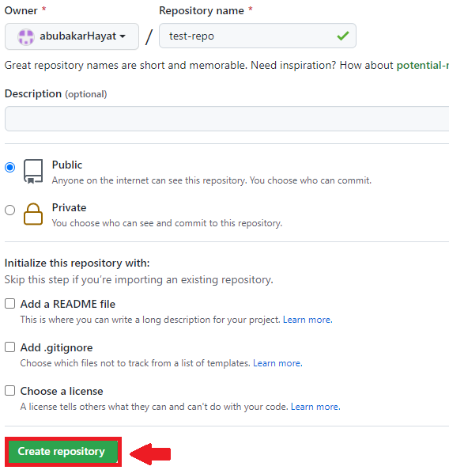
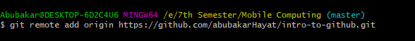

What is Git & Github?
Git is a version control system that lets you manage and keep track of your source code history. GitHub is a cloud-based hosting service that lets you manage Git repositories. If you have open-source projects that use Git, then GitHub is designed to help you better manage them
Step 1.1) Create an account on Github.

Step 1.2) Create a new remote repository.

Step 1.3) Choose a name and finish creating the repository.
Step 1.4) Download and install Git.

Now, We will create a local repository using Git.
Step 2.1) Create a project in a folder and create a git repository there using git init.

Step 2.2) Check the status of the files using git status.

Step 2.3) Add the untracked file(s) to the staging area using git add *filename/directory*.

Step 2.4) To remove any file(s) from staging are you can use git rm --cahced *filename*.

Step 2.5) To check the difference between two branches, commits etc., use git diff.

Step 2.6) You can commit your files in staging area to your local repository using git commit -m "Any message".
Step 2.7) To connect your remote repository on github to your local repository, use git remote add origin *your repository's link*.

Step 2.8) To your local repository to your remote one, use git push -u origin *branch name*.

Working with Branches
Github is all about working with branches. Branches help to seprate versions/parts of your code.
Step 3.1 a) To create a new branch, use git branch *branch name* and then switch to it using git checkout *branch name* .
Step 3.1 b) However, you can use git checkout -b *branch name* to create and switch to that branch simultaneously.
Step 2.1) Create a project in a folder and create a git repository there using git init.
Step 2.2) Check the status of the files using git status.
Step 2.3) Add the untracked file(s) to the staging area using git add *filename/directory*.
Step 2.4) To remove any file(s) from staging are you can use git rm --cahced *filename*.
Step 2.5) To check the difference between two branches, commits etc., use git diff.
Step 2.6) You can commit your files in staging area to your local repository using git commit -m "Any message".
Step 2.7) To connect your remote repository on github to your local repository, use git remote add origin *your repository's link*.
Step 2.8) To your local repository to your remote one, use git push -u origin *branch name*.
Github is all about working with branches. Branches help to seprate versions/parts of your code.
Step 3.1 a) To create a new branch, use git branch *branch name* and then switch to it using git checkout *branch name* .
Step 3.1 b) However, you can use git checkout -b *branch name* to create and switch to that branch simultaneously.